Категории
Учёные физики
Aрхимед
Помимо своих работ в области гидростатики и математики 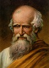Архимед известен нам также своими инженерными изобретениями. Вошли в легенды военные машины, которые он изобретал для защиты Сиракуз от римских завоевателей во время Второй Пунической войны. По отзывам современников, его «коготь» позволял поднимать и переворачивать корабли, тогда как «тепловые лучи», направленные на корабли, заставляли их загораться еще до того, как они могли атаковать город. Но когда римляне окончательно взяли Сиракузы, Архимед по стечению обстоятельств погиб. Увлеченный какой-то математической задачей, он игнорировал приказ римского легионера явиться к консулу Марцеллу, и тот зарубил его.
Изобретения и высказывания великих физиков часто становятся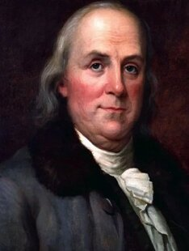 своего рода метафорами, но легенда про яблоко и закон тяготения известнее всех. Каждому знаком Исаак Ньютон, герой этой истории, согласно которой он и открыл закон тяготения. Кроме того, ученый разработал интегральное и дифференциальное исчисление, стал изобретателем зеркального телескопа и написал немало фундаментальных трудов по оптике. Современные физики считают его создателем классической науки. Ньютон родился в бедной семье, обучался в простой школе, а затем в Кембридже, параллельно работая слугой, чтобы оплатить учебу. Уже в ранние годы к нему пришли идеи, которые в будущем станут основой для изобретения систем исчислений и открытия закона тяготения. В 1669 году он стал преподавателем кафедры, а в 1672-м – членом Лондонского королевского общества. В 1687 году был опубликован важнейший труд под названием «Начала». За неоценимые достижения в 1705 году Ньютону даровали дворянство.
Майкл ФарадейМайкл Фарадей (1791 — 1867) — английский физик и химик, 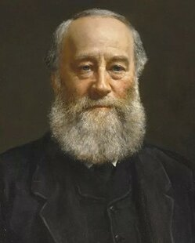основоположник учения об электромагнитном поле. Сделал за свою жизнь столько научных открытий, что их хватило бы десятку ученых, чтобы обессмертить свое имя.Фарадей осуществил сжижение хлора и некоторых других газов, получил бензол. В 1821 г. он впервые наблюдал вращение магнита вокруг проводника с током и проводника с током вокруг магнита, создал первую модель электродвигателя. В течение последующих 10 лет Фарадей занимался исследованием связи между электрическими и магнитными явлениями. Его исследования увенчались открытием в 1831 г. явления электромагнитной индукции. Фарадей детально изучил это явление, вывел его основной закон, выяснил зависимость индукционного тока от магнитных свойств среды, исследовал явление самоиндукции и экстратоки замыкания и размыкания. Открытие явления электромагнитной индукции сразу же приобрело огромное научное и практическое значение; это явление лежит, например, в основе работы всех генераторов постоянного и переменного тока.Стремление выявить природу электрического тока привело Фарадея к экспериментам по прохождению тока через растворы кислот, солей и щелочей. Результатом этих исследований стало открытие в 1833 г. законов электролиза (законы Фарадея). В 1845 г. Фарадей обнаружил явление вращения плоскости поляризации света в магнитном поле (эффект Фарадея). В том же году он открыл диамагнетизм, в 1847 г. – парамагнетизм. Фарадей ввёл в науку ряд понятий – катода, анода, ионов, электролиза, электродов; в 1833 г. он изобрел вольтметр. Используя огромный экспериментальный материал, Фарадей доказал тождественность известных тогда «видов» электричества: «животного», «магнитного», термоэлектричества, гальванического электричества и т.д.
Альберт ЭйнштейнБудущий ученый родился в Германии. С детства Эйнштейн 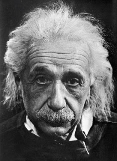любил математику, философию, увлекался чтением научно-популярных книг. За образованием Альберт отправился в технологический институт, где изучал любимую науку. В 1902 году стал сотрудником патентного бюро. За годы работы там он опубликует несколько успешных научных работ. Первые его труды связаны с термодинамикой и взаимодействием между молекулами. В 1905 году одна из работ была принята как диссертация, и Эйнштейн стал доктором наук. Альберту принадлежали множество революционных идей об энергии электронов, природе света и фотоэффекте. Самой важной стала теория относительности. Выводы Эйнштейна преобразили представления человечества о времени и пространстве. Абсолютно заслуженно он был отмечен Нобелевской премией и признан во всем научном мире.
Учёные математики
Пифагор
Когда упоминаются великие математики, большинству людей на ум первым делом 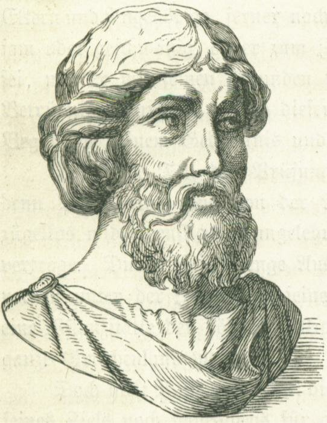приходит именно это имя. Никто доподлинно не знает, что из фактов его биографии является правдой, а что – вымыслом, так как имя обросло массой легенд. За период жизни принят диапазон дат от 570 до 490 года до н. э. К сожалению, письменных работ после него не осталось, однако принято считать, что именно с его благословения были сделаны многие открытия того времени.
Главное открытие в геометрии это знаменитая теорема, которая гласит, что в прямоугольном треугольнике квадрат гипотенузы равен сумме квадратов катетов. Не стоит забывать и таблицу Пифагора, по которой школьники начальной школы изучают принцип перемножения натуральных чисел. Также он вывел метод построения некоторых многоугольников.
Этому древнегреческому математику современная наука обязана 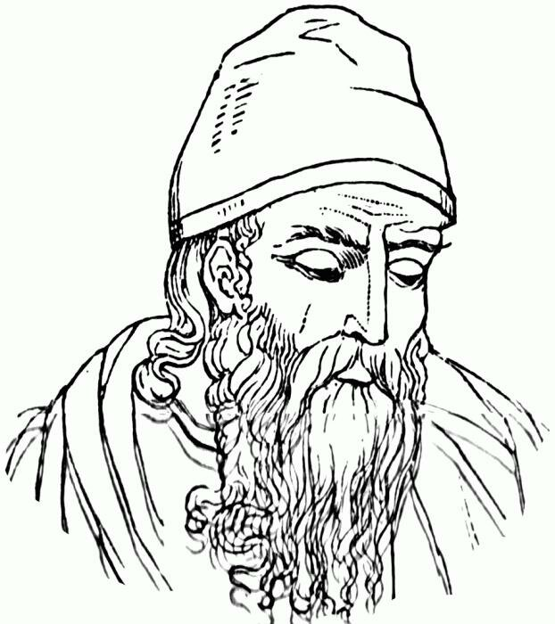геометрией. Евклид родился в 365 году до н. э. в Афинах и в течение 65 лет (до конца жизни, по сути) проживал в Александрии. Его можно смело назвать революционером среди научных деятелей того времени, так как он проделал огромную работу по объединению всего накопленного опыта прошлых лет в одну ровную, логичную систему без "дыр" и противоречий. Этот великий ученый (физик и математик) создал трактат "Начала", который включал в себя более дюжины томов! Помимо этого, из-под его руки вышли работы, описывающие распространение луча света по прямой. Теория Евклида хороша тем, что он в ней оттолкнулся от абстрактного "может быть", приведя ряд постулатов (утверждений, что не требуют доказательств), и уже от них, пользуясь сухой математической логикой, вывел стройную систему существующей ныне геометрии.
Леонард ЭйлерСветило науки с удивительной судьбой. Рожденный в Швейцарии 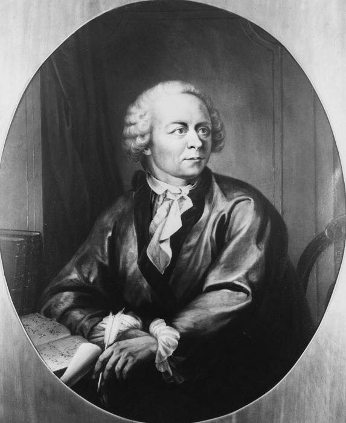(1707 год), он может смело входить в список "Великие русские математики", так как наиболее плодотворно работал и нашел последнее пристанище в России (1783 год).Период его работ и открытий связан именно с нашей страной, в которую он переехал в 1726 году по приглашению академии наук в Санкт-Петербурге. За полтора десятилетия он написал массу трудов как по математике, так и по физике. В общей сложности им было сделано около 9 сотен сложнейших выводов, обогативших науку того времени. К закату жизни Леонарда Эйлера, вопреки правилам (но с одобрения французского правительства), Парижская академия наук сделала его девятым членом, тогда как по правилам их должно быть восемь. Только великие математики могли быть удостоены такой чести, так как любая научная организация педантична, когда дело касается соблюдения правил.Среди открытий Леонарда Эйлера необходимо отметить:Объединение математики как науки. До XVIII века, который по праву считается периодом триумфа Эйлера, все дисциплины были разрознены. Алгебра, математический анализ, геометрия, теория вероятности и т. д. существовали сами по себе, не пересекаясь. Он собрал из них стройную, логичную систему, которая и сейчас преподносится в учебных заведениях без изменений. Вывод числа е, которое примерно равно 2,7. Как вы можете заметить, великие ученые-математики зачастую обретают бессмертие в своих работах, не миновала чаша сия и Эйлера – первая буква фамилии дала название этому иррациональному числу, без которого не существовало бы натурального логарифма.Первую формулировку теории интегрирования с указанием методов, которые в ней применяются. Введение двойных интегралов. Основание и распространение диаграмм Эйлера – лаконичных и наглядных графиков, которые показывают связь множеств вне зависимости от их происхождения. Например, благодаря им можно показать, что бесконечное множество натуральных чисел включено в бесконечное множество рациональных чисел и так далее. Написание революционных для того времени трудов по дифференциальному исчислению. Дополнение элементарной геометрии, выведенной еще Евклидом. Например, он вывел и доказал, что все высоты треугольника пересекаются в одной точке.
Николай Иванович ЛобачевскийЭтот научный деятель, как и все великие русские математики, с 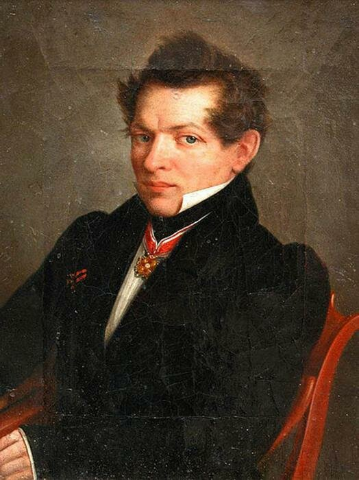детства проявлял недюжинные способности в области точных наук. Николай Иванович Лобачевский родился в 1793 году в одной из губерний России. В возрасте 7 лет вместе с семьей переехал в Казань, где и прожил всю свою жизнь. Скончался он в возрасте 63 лет, увековечив свое имя на века работой, что дополнила классическую геометрию Евклида. Он ввел несколько уточнений в привычную систему, доказав ряд утверждений, например, о том, что параллельные прямые пересекаются на бесконечности. Его работа определяется в плоскости, которая характеризуется скоростями, близкими к скорости света. Казалось бы, в чем смысл открытия для того времени? Теорию находили спорной, возмутительной, однако с течением времени великие ученые-математики признали, что работа Лобачевского приоткрыла дверь в будущее.
Учёные астрономы
Эдвин Хаббл
Известный американский астроном, благодаря работам которого люди смогли понять масштабы 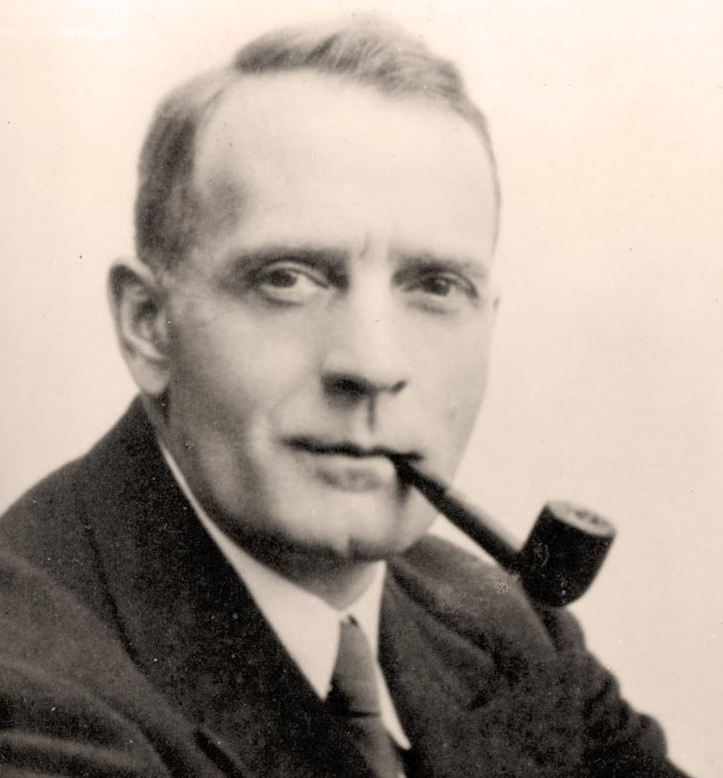Вселенной и разобраться в её физических свойствах.Самой известной его работой и открытием считается описание расширения Вселенной. Он понял, что чем дальше галактика расположена от Земли, тем больше скорость удаления ее от нас. Именно это открытие позже будет названо "Закон Хаббла". Кроме того Эдвин Хаббл разработал классификацию галактик на основе их внешнего вида, которая в дальнейшем и сейчас используется учеными - астрономами во всем мире.
Совместно с ученым Робертом Вильсоном он зафиксировал реликтовое 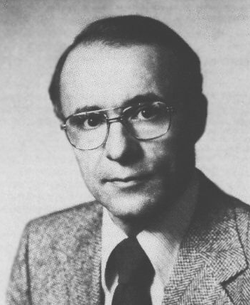излучение, след который остался со времен Большого взрыва.Благодаря данному исследованию и полученным результатам ученые смогли сделать вывод о том, что Вселенная была плотной и горячей. Данное открытие поставило точку в споре между сторонниками горячей и холодной Вселенной в рамках теории Большого взрыва в пользу первых. За это открытие Арно Пензиас был награжден Нобелевской премией.
Георгий (Джордж) ГамовГамов известен своими работами по квантовой механике, атомной и 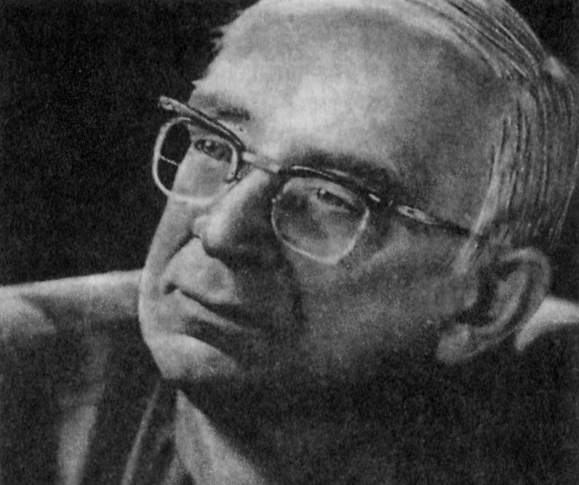ядерной физике, астрофизике, космологии, биологии. Он является автором первой количественной теории альфа-распада, одним из основоположников теории «горячей Вселенной» и одним из пионеров применения ядерной физики к вопросам эволюции звёзд. Он впервые чётко сформулировал проблему генетического кода. Широкую известность Гамову принесли его научно-популярные произведения, в которых живым и доступным языком рассказывается о современных научных представлениях. Именно ему принадлежит идея, которая уточняет теорию Большого взрыва - модель "горячей Вселенной". Это советский физик, который воспользовавшись служебной командировкой остался жить и работать в США вместе со своей женой. Модель "горячей Вселенной" он выдвинул в 1948 году и предсказал реликтовое излучение, которое в дальнейшем открыл Пензианс в 1964 году.
Стивен ХокингСовременный ученый и популист астрофизики и теории Эйнштейна. Именно благодаря ему была разработана теория "черных дыр", а также открыто "излучение Хокинга". Именно Стивен Хокинг смог описать и применить основной закон термодинамики во Вселенной, а в особенности в черных дырах. Также именно им было отрыто испарение черных дыр в процессе распада. Получившиеся в итоге частицы носят название "квазары" или они же "частицы Бога". Именно на основе данной теории был создан Андронный Коллайдер (БАК) и проведено множество исследований на эту тему. Кстати, любопытным фактом стало также предположение ученого насчет того, что в черных дырах не работает время в том понимании, которое мы знаем и информация там остается доступной и не теряется, там хранится всё время, которое есть у нас сейчас. Такую идею отлично реализовал фильм "Интерстеллар", который как раз включил в себя все современные теории по астрофизике, в том числе и теории Хокинга.